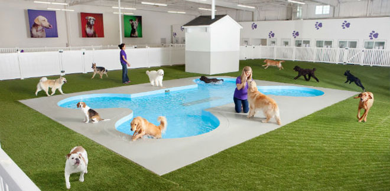

<div class="flex justify-between mb-4 font-dog md:max-h-60 text-sm">
  <div class="bg-sienna-400">Aqui van los cambios de templat</div>
  <div class="bg-sienna-500 overflow-hidden flex-1 cursor-pointer">
    
  </div>
  <nav class="hidden sm:flex p-4 text-sienna-600">
    <ul>
      <li>
        <a class="hover:text-sienna-800  hover:text-lg" routerLink="/about" routerLinkActive="active">Nosotros</a>
      </li>
      <li><a class="hover:text-sienna-800 hover:text-lg" routerLink="/register" routerLinkActive="active">Registro</a></li>
      <li><a class="hover:text-sienna-800 hover:text-lg" routerLink="/contact" routerLinkActive="active">Contacto</a></li>
    </ul>
  </nav>

  <div class="sm:hidden px-4">
    <div (click)="openMenuMobile()" class="text-2xl text-sienna-800 cursor-pointer text-center py-2">
      <!--  -->
      <span class="fa-solid fa-bars"></span>    
    </div>
    <div class="text-sienna-600" *ngIf="isMobile">
      <nav>
        <ul>
          <li>
            <a class="hover:text-sienna-800 hover:text-lg" routerLink="/about" routerLinkActive="active">Nosotros</a>
          </li>
          <li>
            <a class="hover:text-sienna-800 hover:text-lg" routerLink="/register" routerLinkActive="active">Registro</a>
          </li>
          <li>
            <a class="hover:text-sienna-800 hover:text-lg" routerLink="/contact" routerLinkActive="active">Contacto</a>
          </li>
        </ul>
      </nav>
    </div>
  </div>
</div>
